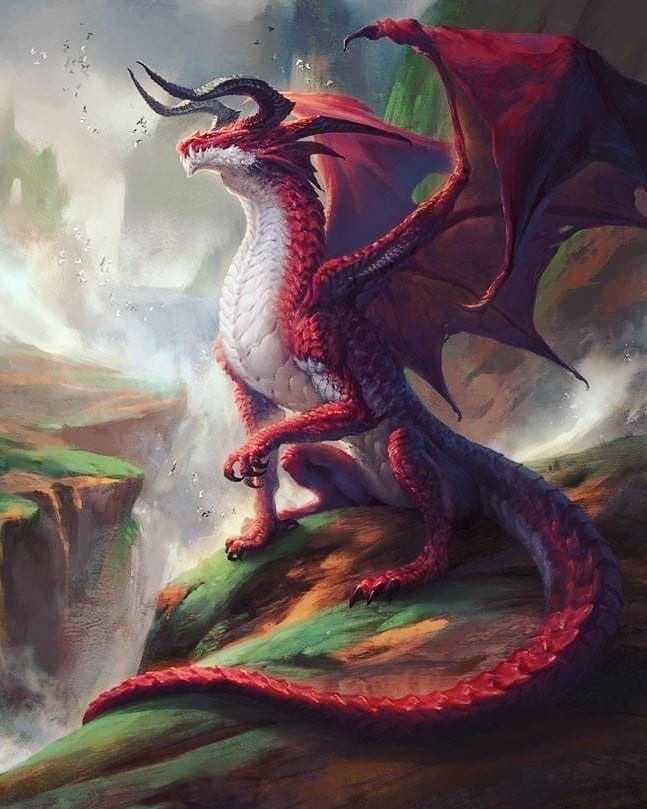
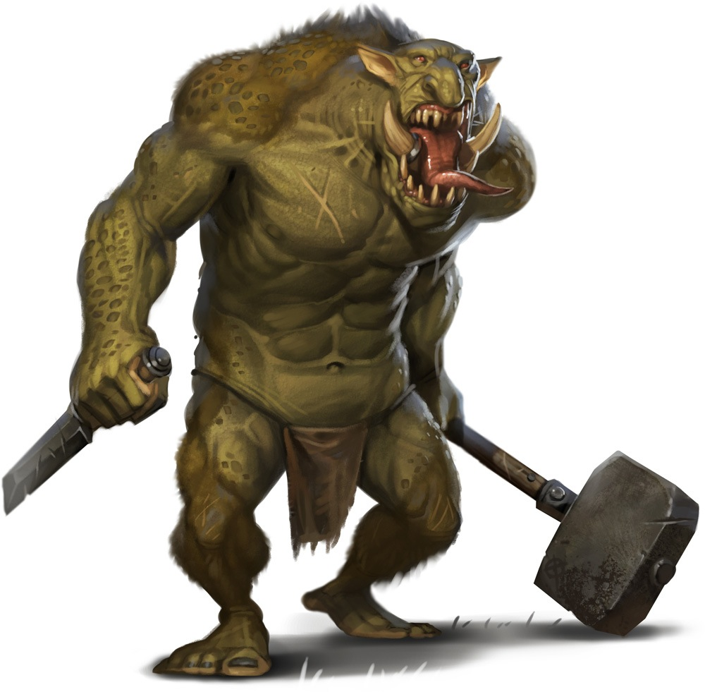
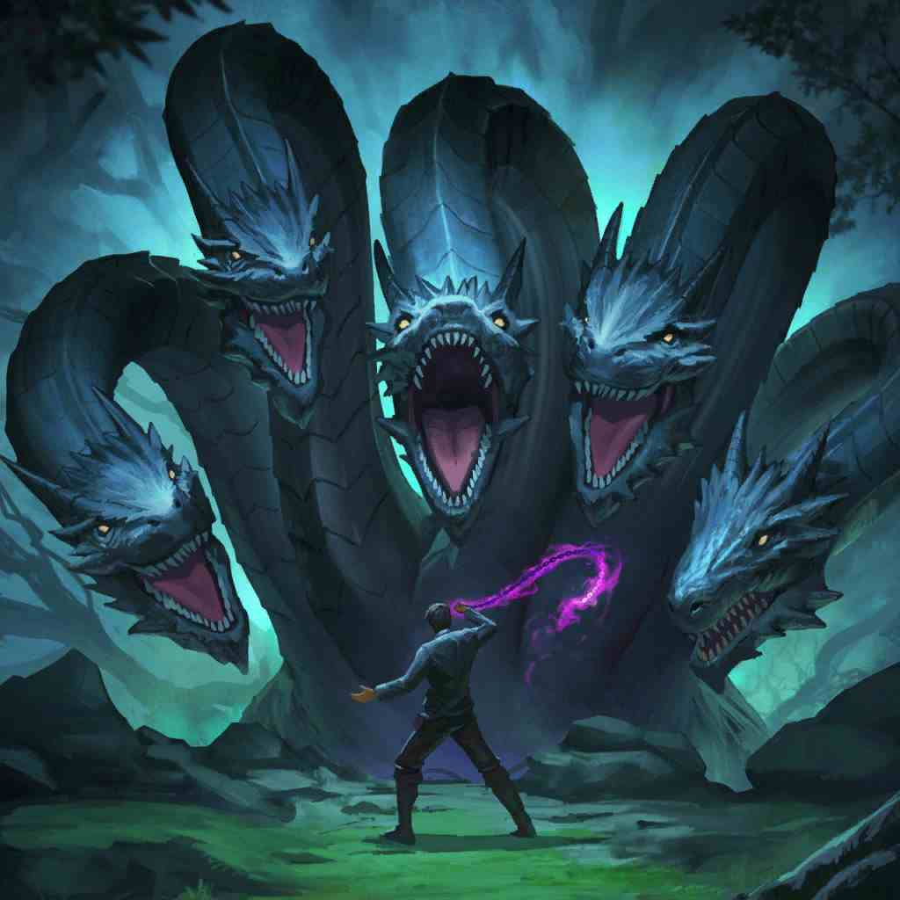
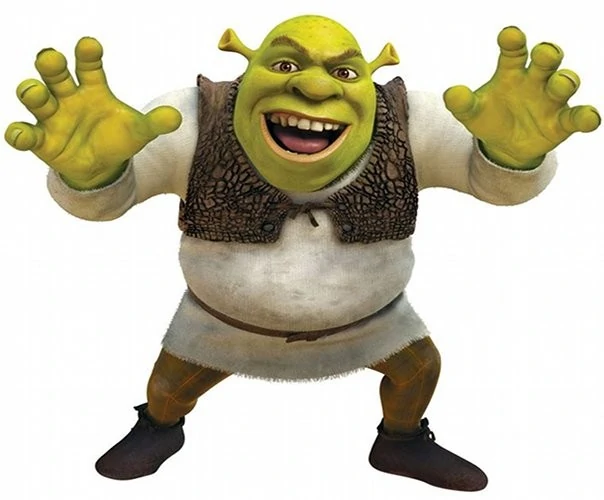
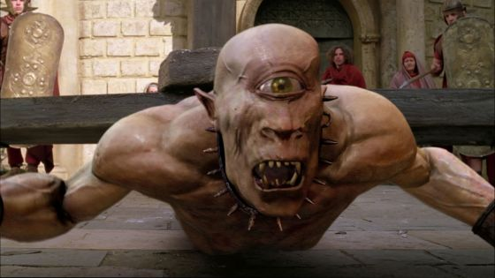
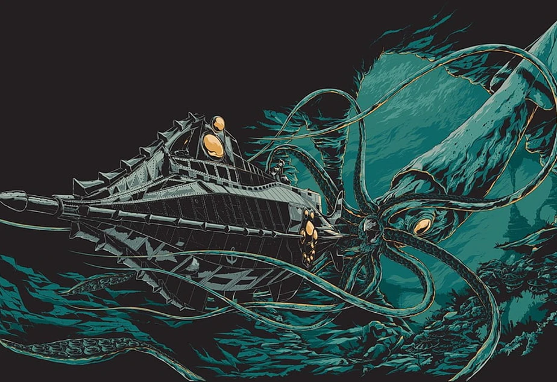
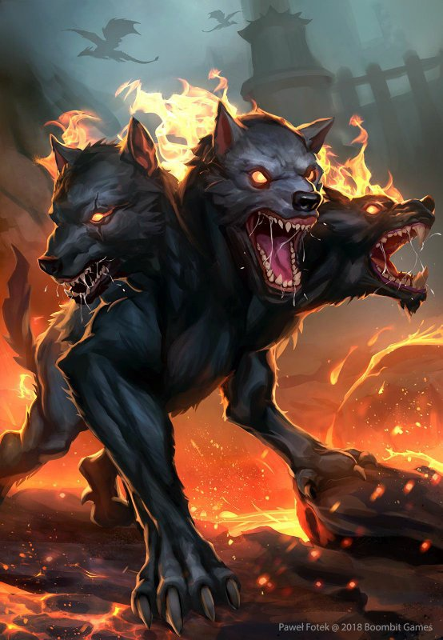

| Number |
Name |
Image |
Description |
| 10 |
Dragon |
 |
A giant fire-breathing lizard with wings |
| 9 |
Troll |
 |
It's like a big goblin |
| 8 |
Hydra |
 |
Big serpentine creature with a bunch of heads that grow back when cut off |
| 7 |
Basilisk |
 |
Another big serpent, but this one was in Harry Potter so its better |
| 6 |
Ogre |
 |
Big man-eating humanoid monster, usually very strong |
| 5 |
Cyclops |
 |
Big strong humanoid with one big eye instead of two, also the name of an X-men |
| 4 |
Kraken |
 |
Giant octopus type of creature known for taking down entire ships, also was in Pirates of the Carribean |
| 3 |
Skinwalker |
|
Cryptid from North American Folklore that can mimic the sounds of animals and people aswell as change forms |
| 2 |
Cerberus |
 |
A multi-headed dog that guards the gates of the Underworld to prevent the dead from leaving |
| 1 |
Akaname (Filthlicker) |
 |
Depicted in a book written in 1776. Creature from Japanese folklore said to lick the filth that collects in bathtubs and bathrooms |